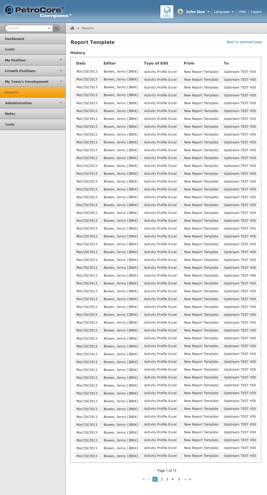

A showcase on how the design is applied throughout the user-interface.
Each section of the Compass UI has a History page. Globally, it is used to document the actions that were taken on that particular section. For example, if a user modifies the Report Template page, it will log that modification under the History page. Refer to the examples below to find out how the History page works globally across Compass.
The user gets access to this page after they create their report template. The "View History" link shows up on the top right of the Edit Report Template. When the user clicks on that link, a page (shown similar to the above screenshot) displays the history of what was done on the Report Template. The "Back" button takes them back to the Edit Report Template page.
Please refer to the Reports page for more information on the Edit Report Template page.
